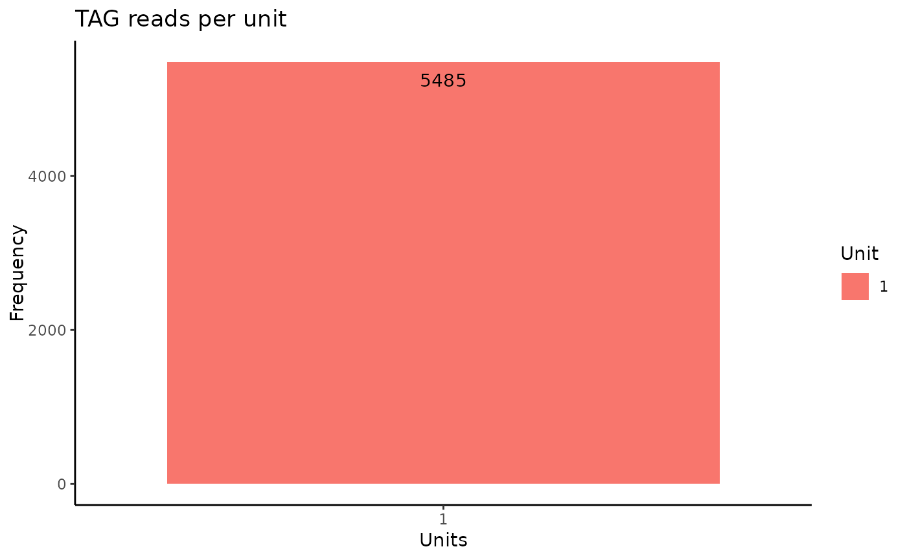

Processes GreenFeed visits and food drops for a requested period. Generates a list of animals not visiting the GreenFeed to manage them, and a description of animals visiting the GreenFeed.
Arguments
- file_path
a character string or list representing files(s) with feedtimes from C-Lock.
- unit
numeric or character vector or list representing one or more GreenFeed unit numbers.
- start_date
a character string representing the start date of the study (format: "mm/dd/yyyy")
- end_date
a character string representing the end date of the study (format: "mm/dd/yyyy")
- rfid_file
a character string representing the file with individual RFIDs. The order should be col1=FarmName and col2=RFID
Value
A list of two data frames:
- visits_per_unit
Data frame with daily processed GreenFeed data, including columns for FarmName, Date, Time, number of drops, and visits.
- visits_per_animal
Data frame with weekly processed GreenFeed data, including columns for FarmName, total drops, total visits, mean drops, and mean visits.
Examples
# You should provide the 'feedtimes' files.
# it could be a list of files if you have data from multiple units to combine
path <- list(system.file("extdata", "feedtimes.csv", package = "greenfeedr"))
# If the user include an rfid file, the structure should be in col1 AnimalName or VisualID, and
# col2 the RFID or TAG_ID. The file could be save in different formats (.xlsx, .csv, or .txt).
RFIDs <- system.file("extdata", "RFID_file.csv", package = "greenfeedr")
data <- viseat(
file_path = path,
unit = 1,
start_date = "2024-05-13",
end_date = "2024-05-25",
rfid_file = RFIDs
)
#> Animal IDs not visiting GF: Animal11, Animal12, Animal13, Animal14, Animal16, Animal17, Animal18, Animal19, Animal20, Animal21, Animal22, Animal23, Animal24, Animal25, Animal26, Animal27, Animal28, Animal29, Animal30, Animal32
